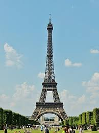

GIÁP THỊ LÝ-20156013-T4-N01-IT4408-20172.

Scale model of the Eiffel tower in Pare Mini-France
Tháp Eiffel (tiếng Pháp: Tour Eiffel) là một công trình kiến trúc bằng thép nằm trên công viên Champ-de-Mars, cạnh sông Seine, thành phố Paris. Vốn có tên nguyên thủy là Tháp 300 mét (Tour de 300 mètres), công trình này do Gustave Eiffel và các đồng nghiệp của mình xây dựng nên nhân dịp Triển lãm thế giới năm 1889, và cũng là dịp kỷ niệm 100 năm Cách mạng Pháp.
Chiều cao nguyên bản của công trình là 300 mét nếu theo đúng thiết kế, nhưng cột ăng ten trên dỉnh đã giúp tháp Eiffel đạt tới độ cao 325 mét. Từ khi khánh thành vào năm 1889, tháp Eiffel là công trình cao nhất thế giới và giữ vững vị trí này trong suốt hơn 40 năm qua. Ngay từ đầu, ngoài chức năng để du lịch, tháp Eiffel còn được sử dụng cho các mục đích của ngành khoa học. Ngày nay, tháp tiếp tục là một trạm phát sóng truyền thanh và truyền hình cho vùng đô thị Paris.
Trở thành biểu tượng của "kinh đô ánh sáng", tháp Eiffel là một trong những công trình kiến trúc nổi tiếng nhất toàn cầu. Từ khi khánh thành cho tới năm 2007, tháp đã có hơn 236 triệu lượt khách viếng thăm. Riêng năm 2007, tháp Eiffel đã đón tiếp gần 7 triệu du khách, giữ vững vị trí công trình thu phí thu hút nhất trên thế giới.
Tháp Eiffel vốn được thiết kế để làm "cái đinh của Triển lãm thế giới năm 1889 tại Paris", phô trương những công nghệ xây dựng của Pháp. Vào thời kỳ đầu, công trình đã gây ra những tranh cãi về vẻ thẩm mỹ, công năng... Tuy vậy, tháp Eiffel vẫn giành được thành công nhanh chóng, trở thành địa điểm thu hút du khách bậc nhất và con số dần ổn định từ những năm 1960